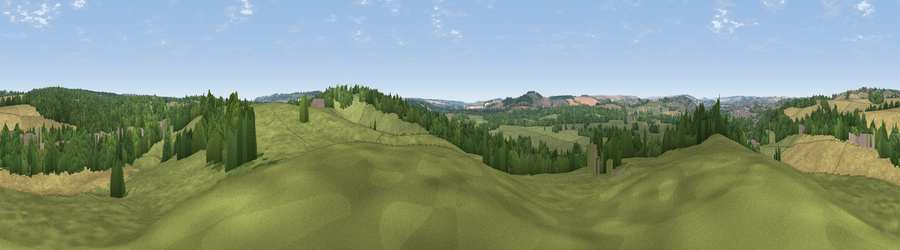

Viewpoint near Alderbury
#33312 in England · top 47% of its area beats it · near AlderburyWhere it is
The exact computed spot (SU 17725 28275). Click the marker for map links.
The view, rendered

A 360° render of this exact spot computed from the terrain model, tree cover and land cover — summer colours, afternoon light, calibrated against photographs of famous viewpoints. Real trees, hedges and buildings will differ in detail.
The panorama
Grey silhouette: terrain skyline in each direction (720 bearings, Earth curvature and refraction included). Dashed green: skyline with trees (+15 m) and buildings (+8 m) as obstacles. Blue strip: how far the ground is visible on each bearing.
Where the view opens
Wedge length = distance to the farthest visible ground on that bearing (vegetation-aware). Rings at 10, 25 and 50 km.
What fills the view
48% grassland · 27% woodland · 22% cropland · 2% built-up
Angular shares of the visible panorama (visual magnitude), not map area. Landscape diversity 0.49 (0–1 Shannon).
Key numbers
More beautiful places nearby
The staircase of upgrades: each row has a higher view potential than everything closer. Driving times are estimates from straight-line distance, calibrated against real road routing — check an actual route before setting out.
| Place | Direction | Drive | Score |
|---|---|---|---|
| Viewpoint near Laverstock | NNW · 3 km | ~8 min | 58.0 |
| Cockey Down | N · 4 km | ~8 min | 60.3 |
| Viewpoint near West Grimstead | SE · 5 km | ~11 min | 62.7 |
| Viewpoint near Bulford | N · 15 km | ~26 min | 70.3 |
| Monk's Down | WSW · 25 km | ~41 min | 74.4 |
| Viewpoint near Berwick St John | WSW · 26 km | ~42 min | 78.2 |
| West High Down | SSE · 45 km | ~65 min | 79.8 |
| Tennyson Down | SSE · 45 km | ~66 min | 83.2 |
51.05355, -1.74849 · source: screening · position refined by local search. Computed location — check access rights before visiting.